Kubernetes
kubernetese架构介绍
kubernetes的名字来之希腊语，意思是舵手 或 领航员。
中间8个字母ubernete替换称8的缩写
k8s的创造者，是重人皆知的行业巨头——-Google
k8s并不是一项全新的发明，它是Google10多年大规模容器管理技术Borg的开源版本
2014年6月k8s由Google公司正式公布出来并宣布开源
k8s的用途
就在docker容器技术被炒得热火朝天之时，大家发现，如果想要docker应用于具体的业务实现，是存在困难的——编排，管理和调度等各个方面，都不容易。于是，人们迫切需要一套管理系统，对docker及容器进行更高级更灵活的管理，就在这个时候，k8s出现了
k8s是容器集群管理系统，是一个开源平台，可以实现容器集群的自动化部署、自动扩缩容、维护等功能
k8s适用场景
- 有大量跨主机容器需要管理
- 快速部署应用
- 快速扩展应用
- 无缝对接新的引用功能
- 节省资源，优化硬件资源的使用
k8s架构
核心角色
- master（管理节点）
- node（计算节点）
- image（镜像节点）
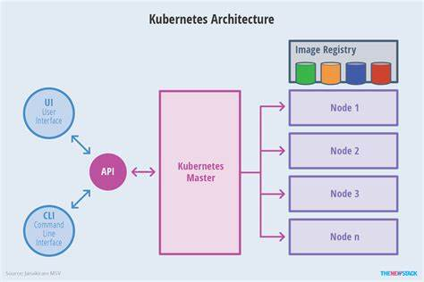
k8s master 是做什么的
master管理节点
- master提供集群的控制
- 对集群进行全局决策
- 检测和响应集群事件
- master由apiserver,scheduler,etcd和controllermanager服务组成
master节点服务
API server
是整个系统的对外接口，供客户端和其他组件调用
后端元数据存储与etcd中（键值数据库）
Scheduler
负责对集群内部的资源进行调度，相当于”调度室”
Controller manager
负责管理控制器，相当于“大总督”
etcd
etcd的定义:
etcd是CoreOS团队于2013年6月发起的开源项目，他的目标是构建一个高可用的分布式键值（key-value）数据库，基于Go语言实现。在分布式系统中，各种服务的配置信息的管理和分享，服务的发现是一个很基本同时也是很重要的问题。CoreOS项目就希望基于etcd来解决这一问题。
kubernetes在运行过程中产生的元数据全部存储在etcd中
etcd键值管理
在键的组织上etcd采用了层次化的空间结构（类似于文件系统中的目录的概念），用户指定的键可以为单独的名字
如何创建key键值，此时实际上放在根目录/key下面
也可以为指定目录结构，如/dir1/dir2/key,则将创建相应的目录结构
etcd有kubernetes集群自动管理，用户无需手动干预
etcdctl是etcd的客户端管理程序
服务端口
| 协议 | 端口范围 | 软件 | 用途 |
|---|---|---|---|
| TCP | 6443 | kube-apiserver | 所有组件接口服务 |
| TCP | 2379~2380 | etcd | kube-api,etcd服务 |
| TCP | 10250 | kubelet | kubelet服务 |
| TCP | 10251 | kube-scheduler | kube-scheduler服务 |
| TCP | 10252 | kube-controller-manager | kube-controller-manager服务 |
node节点服务
- docker
- kubelet
- kube-proxy
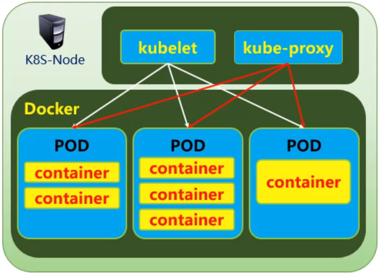
安装部署工具
集群规划
| 主机名 | ip地址 | 角色 | 最低配置 |
|---|---|---|---|
| master | 192.168.1.21 | 管理节点 | 2核2G |
| node | 192.168.1.31 | 计算节点 | 2核2G |
| registry | 192.168.1.100 | 私有仓库 | 2核2G |
准备虚拟机环境
- 关闭防火墙
- 关闭selinux
- 关闭swap
1 | systemctl disable --now firewalld |
安装部署工具
安装部署方式
- 官网：https://kubernetes.io/
- 源码&二进制（容器化部署）
- 下载源码或编译好的二进制，手工添加参数启动服务
- kubernetes采用证书认证方式，需要创建大量证书
- 官方把服务做成“镜像”，下载镜像，启动镜像即可
- 官方工具kubeadm采用的方式（推荐）
安装kubeadm,kubelet,kubectl和docker-ce
kubeadm：用来初始化集群的指令
kubelet：在集群中的每个节点上启动pod和容器等
kubectl：用来集群通信的命令行工具
docker：容器管理工具
配置YUM仓库
docker安装包在目录kubernetes/docker
k8s安装包在目录kubernetes/v1.17.6/k8s-install
依赖包kubernetes/extras
1 | yum install -y httpd createrepo |
安装工具包
- master
- 配置http的yum源
1 | [yum] |
docker配置
为docker配置私有仓库，和cgroup控制器
kubelet使用的是cgroup控制器是systemd，而docker使用的是cgroupfs，必须设置成统一的（查询命令：docker info）
配置文件/etc/docker/daemon.json
1 | 新文件 |
内核环境参数
- 修改host解析
- 开启路由转发
1 | vim /etc/hosts |
kubeadm介绍
kubeadm命令
- config：配置管理命令
- help：查看帮助
- init：初始命令
- join：node加入集群的命令
- reset：还原状态命令
- tocken：tocken凭证管理命令
- version：查看版本
Tab键设置
kubectl、kubeadm支持自动补全功能，可以节省大量输入
自动补全脚本由kubectl、kubeadm产生，仅需要在你的shell配置文件中调用即可
配置完成以后需要退出，重新登陆后生效
1 | kubectl completion bash >/etc/bash_completion.d/kubectl |
私有仓库
初始化镜像仓库
kubernetes/v1.17.6/registry/myos下的myos.tar.gz压缩了4个基础镜像
里面还有一个脚本，适当修改执行，解压上传镜像
1 | vim /etc/yum.repo.d/local.repo |
需要配置daemon.json
1 | sh kubernetes/v1.17.6/registry/myos/init-img.sh |
镜像管理
kubernetes v1.17.6推荐的部署方式是使用镜像
kubernetes的master各个服务是运行在容器内的
镜像有多个，获取镜像的方式
1 | 列出master所需镜像 |
安装master节点
kube-proxy代理
kube-proxy是什么
kube-proxy是实现kubernetes service的通信与负载均衡机制的重要组件，是kubernetes的核心组件
kube-proxy代理模式
kubernetes v1.0, 用户空间代理模式2
kubernetes v1.1, iptables模式代理
kubernetes v1.8, ipvs代理模式，如果不满足条件退回至iptables的代理模式
IPVS代理模式
如何启用IPVS代理模式
条件1：内核必须支持ip_vs，ip_vs_rr，ip_vs_wrr，ip_vs_sh，nf_conntrack_ipv4
条件2：必须有ipvsadm和ipset软件包
条件3：配置文件中开启IPVS参数
mode: ipvs
yum install -y ipvsadm ipset
应答文件
master必须能访问所有计算节点
配置/etc/hosts
检测环境（排错）# 模拟安装
kubeadm init –dry-run
创建配置文件（应答文件）
kubeadm config print init-defaults >kubeadm-init.yaml
1 | 06: ttl: 24h0m0s # token生命值 |
安装master
1 | kubeadm init --config=kubeadm-init.yaml |
安装node节点
kubernetes node是计算节点
运行容器的实际节点
维护运行Pod，并提出具体应用的运行环境
node由kubelet，kube-proxy和docker组成
计算节点被设计为水平扩展，该组件在多个节点上运行
node节点服务
docker
容器管理
kubelet
主要负责监视指派到它的Pod，包括创建，修改，删除等
kube-proxy
主要负责为Pod对象提供代理
实现service的通信与负载均衡
Pod
Pod是什么
- pod是kubernetes调度的基本单元
- 一个Pod包含一个或多个容器
- 这些容器使用相同的网络命名空间和端口号
- Pod是一个服务的多线程的聚合单位
- Pod作为一个独立的部署单位，支持横向扩展和复制
Pod的作用
- 由若干容器组成的一个容器组
- 每个组内容器共享一个存储卷(volume)
- 每个Pod被分配到节点上运行直至运行结束或删除
- 同个Pod下的容器使用相同的网络命名空间，IP地址，和端口区间相互之间能通过localhost来发现和通信
node安装
初始化
firewalld、swap、selinux、yum
1 | systemctl disable --now firewalld |
- 安装IPVS模式软件包
1 | yum install ipvsadm ipset -y |
- 配置docker私有仓库镜像和cgroup驱动(daemon.json)
1 | scp master:/etc/docker/daemon.json /etc/docker/daemon.json |
- 配置内核参数（k8s.conf）
1 | scp master:/etc/sysctl.d/k8s.conf /etc/sysctl.d/k8s.conf |
- 配置host解析
1 | scp master:/etc/hosts /etc/hosts |
安装命令(加入集群)，当master节点安装完成后（kubeadm init –config=kubeadm-init.yaml）
最后一行会输出
kubeadm join 192.168.1.12:6442 –tocken <token> –discovery-tocken-ca-cert-hash sha256: <token ca hash>
Token
如何获取token证书的
hash–discovery-tocken-ca-cert-hash sha256: <token ca hash>
CA证书路径master:/etc/kubernetes/pki/ca.crt
通过openssl指令获取(master)
1 | openssl x509 -pubkey -in /etc/kubernetes/pki/ca.crt | \ |
token管理
列出所有token
kubeadm token list
删除指定token
kubeadm token delete <token名>
创建token
kubeadm token create –ttl=0 –print-join-command
ttl=0：永久有效
print：打印命令
node加入集群
1 | kubeadm join 192.168.1.12:6442 --tocken <token名> \ |
安装Flannel插件
flannel网络
flannel 是什么
flannel实质上是一种“覆盖网络(overlay network)”, 也就是将TCP数据包装在另一种网络包里面的进行路由转发和通信，目前已经支持UDP, VxLAN, AWS VPC和GCE路由等数据转发方式
使用flannel目标
不同主机内的容器实现互联互通
转发原理
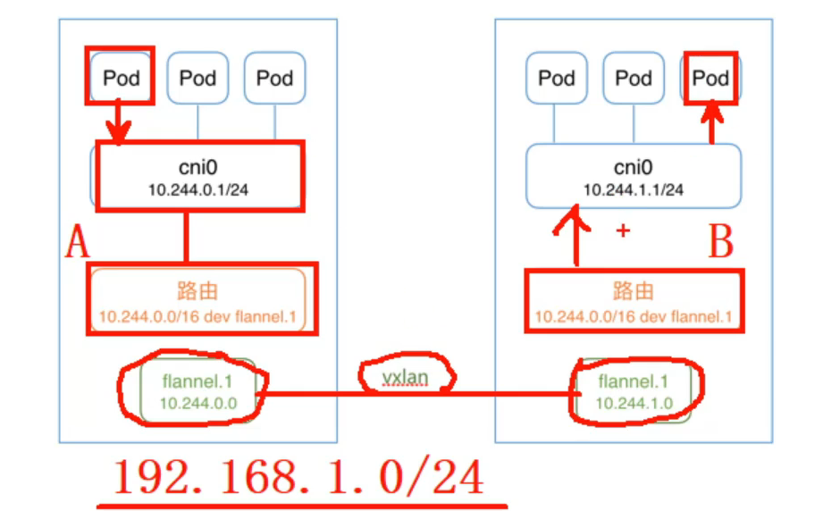
flannel镜像
- 软件地址：https://github.com/coreos/flannel
- 资源文件：kube-flannel.yml
- 镜像文件：flannel.tar.gz
- 本地镜像地址kubernetes/v1.17.6/flannel
安装flannel
- 导入镜像到私有仓库
1 | docker load -i flannel.tar.gz |
- 修改kube-flannel.yaml
1 | 128: "Network":"10.244.0.0/16" # 修改为PodSubnet地址 |
- 安装并验证
1 | 只需在master安装，其他节点就会自动完成适配 |
kubectl命令
语法格式
kubectl [command] [TYPE] [NAME] [flags]
command: 子命令，如create，get，describe，delete
type：资源类型，可表示为单数，复数或缩写形式
name：资源名称，如果省略，则显示所有资源信息
flags：指定可选标志，或附加的参数
kubectl get
kubectl get 查询资源
get node 查询节点
get deployment 查询资源
get pod 查询pod容器
get pod -o wide 查询pod详细信息
命名空间
系统默认含有的命名空间
default默认的命名空间，不声明命名空间的POD都在
kube-node-lease为高可用提供心跳监视的命名空间
kube-public公共数据，所有用户都可以读取它
kube-system系统服务对象所使用的命名空间
查看命名空间
kubectl get namespace
查看命名空间中的资源
kubectl get pod -n 命名空间
查看资源类型模板
- kubectl explain DaemonSet –recursive 可查看模板
- kubectl api-resources 可以查看资源的kind
- kubectl edit DaemonSet kube-proxy 可修改调度
排错常用命令
kubectl get
查看资源基础信息
kubectl get 资源类型
kubectl describe
查看资源详细信息
kubectl describe 资源类型 资源名称
kubectl logs
查看容器运行日志
kubectl logs 资源名称
Pod与控制器
创建容器
kubectl run
语法格式
kubectl run 资源名称(自定义) -i -t –image=私有仓库镜像名称:标签
资源控制器
- Deployment资源控制器
- Deployments为RS提供滚动更新
- ReplicaSet 资源控制器（RS）
- ReplicaSet 创建POD
- ReplicaSet 可以扩容和缩容
- POD 最小的管理单位
- POD 负责启动和运行容器
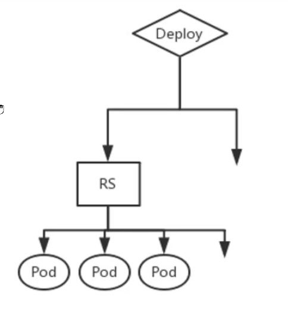
POD概述
- POD是kubernetes中最小的管理元素
- Pod可以理解为linux命名空间的联合
- 同一个Pod共享进程（PID）
- 同一个Pod共享网络ip及权限（NETWORK）
- 同一个Pod共享IPC通信信号（IPC）
- 同一个Pod共享主机名称（UTS）
pod创建过程
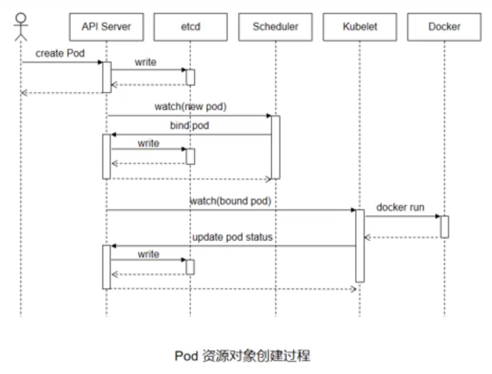
pod生命周期
- Pod对象自从其创建开始至其中止退出的时间范围称为其生命周期。在这段时间中，Pod会处于多种不同状态，并执行一些操作；
- 其中，创建主容器（main container）为必须的操作，其他可选的操作还包括运行初始化容器（init container），容器启动后钩子（post start hook），容器存活性探测（liveness probe），就绪性探测（readiness probe）以及容器终止前钩子（pre stop hook）等。
- 这些操作是否执行取决于Pod的定义
pod启动过程
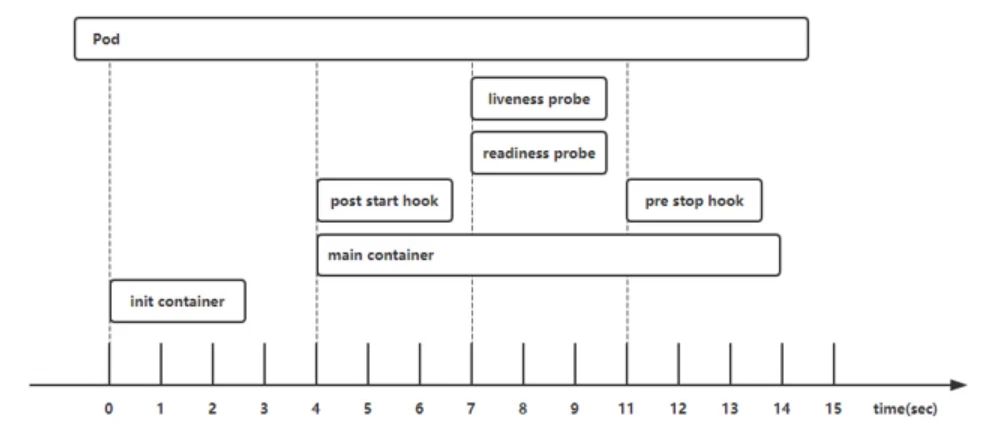
pod phase
pod的status 字段是一个podstatus的对象，pod对象总是应该处于其生命进程中以下介个相位（phase）之一。
Pending容器创建过程中，但它尚未被调度完成
Running所有容器都已经被kubelet创建完成
Succeeded所有容器都已经成功终止并不会被重启
Falied Pod中所有容器中至少有一个容器退出是非0状态
Unknown无法正常获取到Pod对象的状态信息
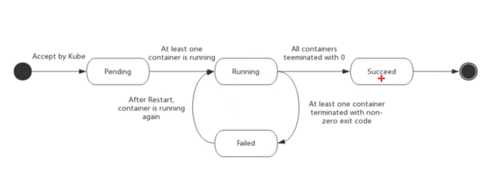
pod特点
pod的生命周期是短暂的，用后即焚的实体
注意：重启POD中容器跟重启POD不是一回事，POD只提供容器的运行环境并保持容器的运行状态，重启容器不会造成POD重启。
pod不会自愈，如果pod运行的node故障，或者是调度器本身故障，这个pod就会被删除
控制器（Deployment/RC/RS）可以创建和管理多个Pod，提供副本管理，滚动升级和集群级别的的自愈能力
进程容器
- kubectl exec
- 启动新命令，进入一个正在运行的容器
- kubectl exec -it 容器id – 执行命令(/bin/bash)
删除容器
- 删除资源
- kubectl delete 资源类型 资源名称
yaml资源文件
资源对象文件
什么是资源文件对象文件
- kubernetes通过RC/RS管理POD，在RC中定义了如何启动POD，如何运行，启动几副本等功能
- 如果我们创建的文件，在其中使用yaml的语法格式描述了上面的信息，这个文件就是我们的资源对象文件
资源对象文件有什么用
- 可以创建，删除，管理资源对象
- 很多高级的复杂的功能靠简单的命令方式无法实现，这些都需要使用资源对象文件
POD资源文件样例
1 |
|
Deployment资源文件
1 |
|
标签和选择器
为了建立控制器和pod间的关联，kubernetes先给每个pod打上一个标签（label），然后在给相应的的位置定义标签选择器（Label Selector），引用这些标签
1 | ... ... |
使用资源文件管理对象
- cteate|apply创建/声明更新 资源对象 #创建只能执行一次，声明更新可重复执行
- delete删除资源对象
- kubectl （apply|creat|delete）-f 资源文件
查看资源对象文件
- 查看对象文件一般由用户根据需求编写
- 我们也可以查询一个资源对象文件
- 格式包含json、yaml
- kubectl get 资源对象 资源名称 -o 格式
deployment控制器
deployment案例
1 |
|
nodeName标签
- 容器创建是随机的，如何选择固定的宿主机
- 使用nodaName标签根据节点名称选择宿主机
注意：如果添加了选择标签，但无法使用该主机，POD将一直处于Pending状态
1 | spec: # POD.SPEC标签 |
nodeSelector标签
- 如何选择一类宿主机
- 需要提前为目标主机打上特定的标签（可以是多台）
- 在资源文件中根据标签选择宿主机（更加灵活）
1 | spec: # POD.SPEC标签 |
node设置标签
nodeSelector是节点选择约束的最简单推荐形式
我们可以给节点打上标签，根据标签来选择需要的节点
查看标签
kubectl get node –show-labels
设置标签
kubectl label nodes <node-name> <label-key>=<lable-value>
删除标签
kubectl label nodes <node-name> <lable-key>
-
集群扩容
replicas决定了集群pod的数量
创建一个单字节的web容器
- kubectl apply -f web-exampie.yaml
在集群运行过程中我们可以动态调整集群pod的数量
修改服务配置，及时生效
kubectl edit deployments.apps web-example
scale命令
kubectl scale deployments.apps web-example –replicas=3
需要清理之前设置的标签
亲和与反亲和
- 高级调度策略–亲和与反亲和（扩展知识）
- 亲和可以理解为偏爱喜好，同样反亲和可以理解为不喜欢
- 在kubernetes中亲和在pod.spec.affinity中设置
- 从亲和的对象又可以分为（节点亲和）和（容器亲和）
- 从亲和的策略又可以分为（硬亲和）和（软亲和）
- 手册地址：https://kubernetes.io/zh/docs/concepts/scheduling-eviction/assign-pod-node/
DaemonSet控制器
DaemonSet控制器介绍
- DaemonSet每个机器都要启动运行的Pod，确保全部或一些Node上运行Pod副本
- 当有node加入集群时，也会为它新增pod副本，当node从集群移除时，这些pod也会被回收
- 删除DeamonSet时将删除所有它创建的pod副本
- 典型应用：ceph节点，监控节点，filebeat日志收集等
- 系统服务kube-proxy和flannel就是这种类型
DaemonSet案例
daemonset与deployment非常相似，区别是不需要设置replicas，因为daemonset是每节点都启动的
1 |
|
pod部署策略
我们会发现一个有趣的现象
daemonset会调度到除了master以外的所有的节点
master节点除了一些系统服务以外不会有其它pod
为什么其他pod不会在master上部署？
污点与容忍
污点
污点标签
- NoSchedule不会被调度
- PreferNoSchedule尽量不调度
- NoExecute驱逐节点
查看污点标签
- kubectl describe node 节点名
- kubectl describe node master
设置标签污点
- kubectl taint node node-0001 key=value:NoSchedule
删除污点标签
- kubectl taint node node-0001 key=value:NoSchedule-
查看污点标签
- kubectl describe nodes | grep -P “^Taints”
容忍
- 容忍污点（扩展知识）
某些时候我们需要无视污点标签进行操作，这种方式对称为污点的容忍
污点容忍文档：https://kubernetes.io/zh/docs/concepts/scheduling-eviction/taint-and-toleration/
1 | ... ... # POD.SPEC添加容忍策略 |
Job控制器
job控制器介绍
Job控制器可以理解为定时任务
Job单任务控制器，负责执行一次任务，保证任务在一个或多个pod上执行成功
高级的CronJob重复多次任务控制器
基于时间管理的Job，是在特定时间内自动创建Job
典型用法：周期性计划任务
单次任务
- yaml案例
1 |
|
- kubectl logs job-example # 查询返回结果
计划任务
- cronjob任务的本质是多次创建job
- 在job中会保留最后三次的状态，其他会被清除
1 |
|
服务与负载均衡
使用之前的yaml创建一个2副本的pod，
当我们delete一个pod后，发现它会自动重建，
并随机分配到集群中的任意节点上，每次重建IP都会发生变化。
service服务
会变化的pod(指重建后IP会变化)给我们访问带来了非常多的不便
- service就是解决这一问题的方法
- service会创建一个cluster ip，这个地址对应资源地址，不管pod如何变化，service总能找到对应的pod，且cluster ip保持不变，如果由pod对应多个容器，service会在多个容器间实现负载均衡
- service通过IPTABLES/LVS规则将访问的请求最终映射到pod容器内部服务上
servicie服务资源文件
1 |
|
服务端口
port: service暴露在cluster ip上的端口，是提供给集群内部客户访问service的入口，供集群内部服务访问使用
targetPort：是pod上容器服务监听的端口，从port或nodePort上到来的数据最终经过kube-proxy流入到后端pod的targetPort进入容器，从而达到访问pod容器内服务的目的
服务自动发现
创建/查询服务
- 创建服务：kubectl apply -f 资源文件
- 查询服务可以使用：kubectl get service
- curl http://10.103.57.47 #访问
服务自动发现
- cluster ip是集群分配的服务的IP，供集群访问，在集群内部也可以通过服务的名称访问，服务的名称是通过coredns解析的，每个服务在创建的过程中都会完成自动注册
- 服务名称：<服务名称>.<名称空间>.svc.cluster.local
- 在master应答文件中定义了serviceSubnet: 10.254.0.0/16
- ping my-service.default.svc.cluster.local查看cluster ip
service服务验证
- 访问服务（Cluster IP）
- 集群内可以直接访问服务，但集群外无法访问服务
1 | 集群外无法直接访问 |
多资源文件
多个资源文件可以写到同一个yaml文件中，使用
---分割
1 |
|
服务原理解析
代理模式种类
- kubernetes v1.0服务支持userspace代理模式
- kubernetes v1.1服务支持iptables代理模式
- kubernetes v1.8服务支持ipvs代理模式
在kubenetes v1.2中，kube-proxy的iptables模式成为默认设置，现在默认使用ipvs，如果不满足要求退回至iptables的代理模式
userspace模式
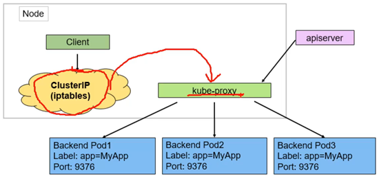
iptables模式
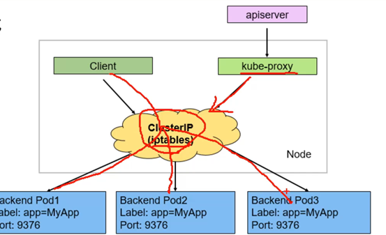
ipvs模式
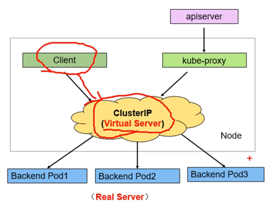
服务类型
Service允许指定一个Type类型的，默认是ClusterIP
ClusterIP：通过集群内布的IP暴露服务，服务只能在集群内部可以访问，也就是默认的ServiceType。
NodePort：通过每个node上的ip和静态端口（NodePort）暴露服务。NodePort服务会路由到ClusterIP服务。
LoadBalancer：使用云提供商的负载均衡器，外部的负载均衡器可以路由到NodePort服务和ClusterIP服务。
对外发布服务
我们之前构建的服务已经可以在集群内部运转起来了，但集群外还无法访问集群内部的服务
有时候，服务可能来自第三方或其他团队，我们无法把所有服务都放入集群内部，这时候我们就需要集群内部和集群外部的服务能够实现互访
LoadBalancer：使用外部的云服务（需要支持，externallPs）
nodePort：基于端口对外提供服务（四层）
Ingress：使用ingress控制器（七层）
nodePort服务
- 资源文件
1 |
|
访问nodePort
- nodePort开放的端口所有node均可访问
1 | kubectl get service web-service -o wide |
Headless服务
要是不需要或者不想要负载均衡，以及单独的service IP。遇到这种情况，我们可以创建Headless服务
Headless服务会把ip通过多个A记录的形式解析到具体的容器ip上面，多用于状态的服务
1 | dig -t all hl-service.default.svc.cluster.local |
Headless服务资源文件
1 |
|
Ingress控制器
Ingress介绍
Ingress本质上也是一种负载均衡
- Ingress公开从集群外部到集群内service路由
- 可以将Igress配置为提供服务外部可访问的URL、负载均衡流量
- Ingress控制器通常由负载均衡器来实现
- 必须具有ingress控制器才能满足ingress要求，仅创建资源无效
- 与nodeport不同nodeport是在所有节点都可访问，而ingress在哪个节点发布，那个节点才能访问
Ingress架构
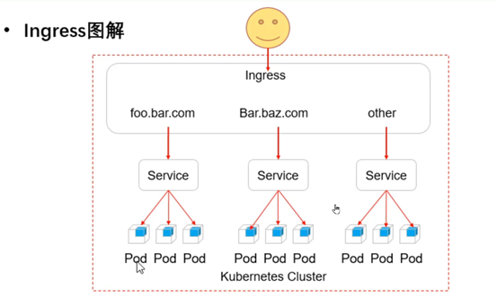
Ingress安装配置
- 导入镜像到私有仓库
- 控制器：ingress-nginx.tar.gz
- 地址：https://github.com/kubernetes/ingress/ingress-nginx
1 | 修改mandatory.yaml |
向外发布服务
通过ingress向外发布集群内服务
1 |
|
验证服务
- 查询验证
1 | kubectl get ingress |
多域名发布
- ingress本质是nginx/haproxy实现的负载均衡
- ingress可以设置七层规则，例如根据域名选择服务
1 |
|
ConfigMap映射
ConfigMap是Pod中映射（文件/目录）的一种方式，允许你将配置文件与镜像文件分离，使容器化的应用程序具有可移植性。
在日常工作中经常需要修改各种配置文件的参数，数据库的地址，用户名密码等，这些操作在容器内非常麻烦，POD在重启或迁移的时候又会恢复到初始的状态，使用ConfigMap就可以解决这样的问题。
集群架构
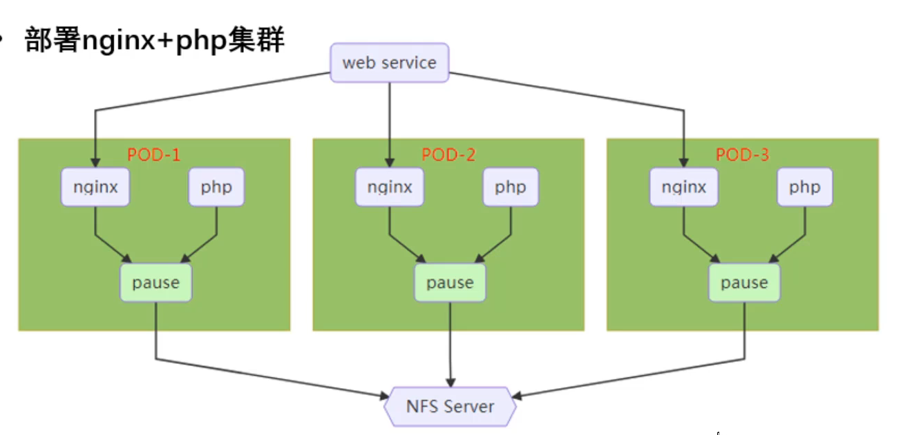
ConfigMap应用案例
- nginx需要修改配置文件才能支持php
- 解决方案：configmap
- nginx如何访问php服务
- 解决方案：同一个pod中共享网络命名空间
1 | kubectl cp nginx-pod:/usr/local/nginx/conf/nginx.conf nginx.conf |
定义ConfigMap
- configMap可以映射单一文件，也可以映射一个目录
- 创建cinfigmap
- kubectl create configmap 名称(自定义) –from-file=文件路径
1 | kubectl create configmap nginx-conf --from-file=nginx.conf |
加载configmap的配置
- 资源文件
- 在配置容器的地方引用刚刚加载的configmap配置
1 | ... ... |
执行资源文件访问测试
1 | kubectl apply -f web.yaml |
存储卷
容器磁盘上的文件的生命周期是短暂的，这就使得容器在运行一些重要应用时会出现一些问题。首先，当容器崩溃时，kubelet会重启它，但是容器中的文件将丢失——容器以最干净的状态（镜像最初状态）重新启动。其次，在pod中同时运行多个容器时，这些容器通常需要共享文件。kubernetes中Volume抽象就很好的解决了这些问题。
存储卷类型
| 所有 | 类型 | ||
|---|---|---|---|
| awsElasticBlockStore | downwardAPI | glusterfs | projected |
| azureDisk | empthDir | hostPath | quobyte |
| azureFile | fc | iscsi | rbd |
| cephfs | flexVolume | nfs | scalelO |
| cinder | flocker | persistentVolumeClaim | secret |
| configMap | gcePersistenDisk | photonPersistenDisk | storageos |
| sci | gitRepo | portworxVolume | vsphereVolume |
卷类型案例
empthDir
最基础的volume类型，用于存储临时数据的简单空目录。如果pod设置了emptyDir类型volume，pod被分配到node上的时候，会创建emptyDir，只要pod运行在node上emptyDir都会存在（容器挂掉不会导致emptyDir丢失数据），但是如果pod从node上被删除（pod被删除或者发生迁移），emptyDir也会被删除，并且永久丢失。
emptyDir可以实现同一个pod中的数据共享
emptyDir常用来存放缓存数据
1 | ... ... |
hostPath
映射node文件系统中的文件或者目录到pod里。在使用hostPath类型的存储卷时，也可以设置type字段，支持的类型有文件，目录，file，Socket，CharDevice和BlockDevice。
注意事项：配置相同的pod，可能在不同的node上表现不同，因为不同节点上映射的文件不同。
hostPath里面的数据不会随着pod的结束而消失
hostPath常用来分布式节点的存储目录，或日志存放目录。
1 | ... ... |
持久卷
在生产环境中通常需要多个pod或多个APP共享数据，而这些应用又在不同机器的不同pod里，网络文件系统通常用来解决这一问题
kubernetes中通过简单的配置就可以挂载到NFS（网络文件系统）到Pod中，而NFS中的数据是可以永久保存的，同时NFS支持并发写操作
当然cephfs、glusterfs等都能很好的解决这个问题，我们以NFS为例
pv/pvc
- persistentVolume（持久卷，简称PV）
- PV是资源的提供者，根据集群的基础设施变化而变化，有k8s集群管理员配置
- persistent VolumeClaim（持久卷声明，简称PVC）
- 而PVC是资源的使用者，根据业务服务需求变化来配置
- PV/PVC的引入是k8s集群具备了存储的逻辑抽象能力
配置NFS服务器
1 | 节点192.168.1.100 |
配置PV
1 |
|
配置PVC
1 |
|
应用配置文件
1 | ... ... |
资源利用率监控
metrics
metrics是一个监控系统资源使用的插件，可以将空node节点上的cpu，内存使用率，或pod对资源的占用率，通过对资源占用的了解，可以更加合理的部署容器应用
metrics从kubernetes 1.8开始，资源使用情况的监控可以通过Metrics API的形式获取，具体的组件为Metrics Server，用来替换之前的heapster，heapster从1.11开始逐渐被放弃
查看资源占用情况
1 | kubectl top node |
metric-server是扩展的apiserver，依赖于kube-aggregator，因此需要apiserver中开启相关参数，开启聚合API
–enable-aggregator-routing=true
修改api-server启动参数
1 | vim /etc/kubernetes/manifests/kube-apiserver.yaml |
- 验证配置
1 | systemctl restart kubelet |
kubelet证书
metrics使用kubelet证书，为kubelet签发证书
在/var/lib/kubelet/config.yaml配置文件中添加
serverTLSBootstrap: true
重启服务，等待几分钟后就看到了
包括master在内的所有节点都需要做
查看证书
1 | kubectl get certificatesigningrequests |
签发证书
- 看到pending的状态后我们就可以签发证书了
- 证书只能在master上签发
- kubelet certificate approve证书名称
1 | kubectl certificate approve csr-nvd65 |
安装metrics-server
下载镜像和资源文件，导入私有仓库
镜像导入私有仓库
安装metrics-server
rabc.yaml授权控制器
pdb.yaml中断控制器
deployment.yaml主进程metrics
service.yaml后端是metrics主进程的服务
apiservice.yaml注册集群API
编辑deployment.yaml
image：替换称私有仓库
依次安装资源对象
1 | kubectl apply -f rbac.yaml |
查询资源
- 查询内存、cpu使用情况
1 | kubectl top node |
Dashboard管理
Dashboard是基于网页的kubernetes用户界面。你可以使用Dashboard将容器应用部署到kubernetes集群中，也可以对容器应用排错，还能管理集群资源。你可以使用Dashboard获取运行在集群中的应用的概览信息，也可以创建或修改kubernetes资源（如Deployment，Job，DaemonSet等等）
Dashboard同时展示了kubernetes集群中的资源状态信息和所有报错信息
dashboard镜像
kubernetes/v1.17.6
dashboard安装
- 在docker中导入镜像，并上传到私有仓库
- dashboard.tar.gz镜像
- metrics-scraper.tar.gz收集metrics监控信息插件
- metrics-scraper插件
kubernetes Dashboard从v2.0.0-beta1版本开始，集成了一个metrics-scraper的组件，可以通过kubernetes的metrics API收集一些资源的监控信息，并在web页面显示
- 配置资源文件
1 | image: 192.168.1.100:5000/dashboard:v2.0.0 |
发布到nodeport
1 | vim recommended.yaml |
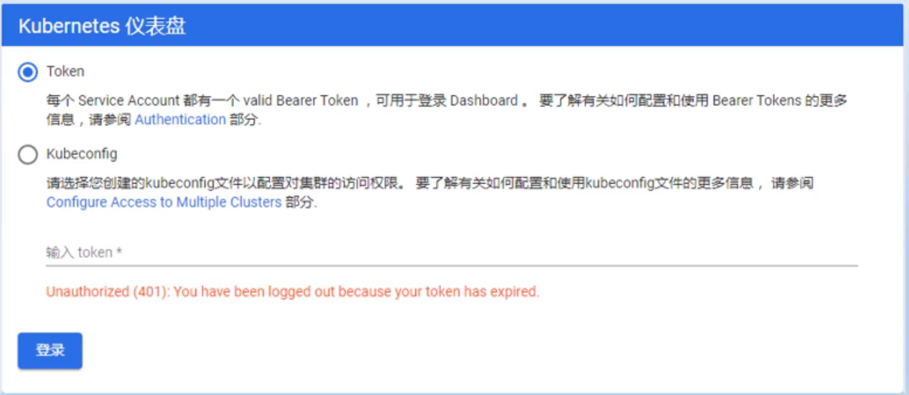
认证登录
admin-token.yaml
创建用户管理admin-user
绑定为集群管理角色
1 | vim admin-token.yaml |
- admin-token资源文件
1 |
|
- 查询token登录
1 | kubectl -n kubernetes-dashboard get secrets |
Prometheus安装
prometheus是SoundCloud公司开发的一个监控系统和时间序列数据库，许多公司接受和采用prometheus，之后他们便将它独立成开源项目，并且用公司运作，该项目有非常活跃的社区和开发人员，2016年prometheus加入了云计算基金会，成为kubernetes之后的第二个托管项目。
下载最常见的k8s容器管理系统中，通常搭配prometheus进行监控，可以把它看成google BorgMon监控的开源版本。
prometheus的主要特点
- 自定义多维数据模型
- 非常高效的存储 平均一个采样数据占 -3.5bytes左右
- 在多维度上灵活且强大的查询语言（PromQ）
- 不依赖分布式存储，支持单主节点工作通过基于HTTP的pull方式采集时序数据通过push getway进行时序数据推送（pushing）可以通过服务发现或者静态配置去获取要采集的目标服务器多种可视化图标及仪表盘
部署架构
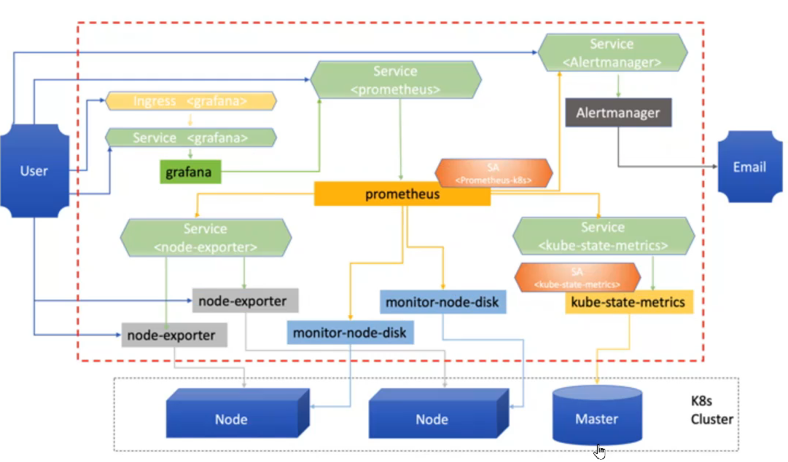
prometheus组成
- Prometheus Server：对监控数据的获取，存储以及查询
- Exporters：采集node节点的数据提供给Prom Server
- metrics-state：获取各种资源的最新状态（pod，deploy）
- adapter：获取APIServer的资源指标提供给Prom Server
- Alert Manager：Prometheus体系中的告警处理中心
- Grafana：支持多种图形化的Dashboard的展示
- operator：以扩展kubernetes api的形式，帮助用户创建配置和管理复杂的有状态应用程序
安装Prometheus
- 下载支持的分支版本
- git clone -b release-0.4 https://github.com/coreos/kube-prometheus.git
- 下载镜像和资源文件，并导入私有仓库
- 导入所有images中的镜像到私有仓库
1 | 安装operator |
发布Grafana服务
- grafana默认的服务使用ClusterIP
- 使用nodePort发布服务
1 | vim grafana-service.yaml |
浏览器访问
- 192.168.1.21L:30002
- 登录的默认用户（admin/admin）
- 第一次登录需要修改密码
- 选择数据源
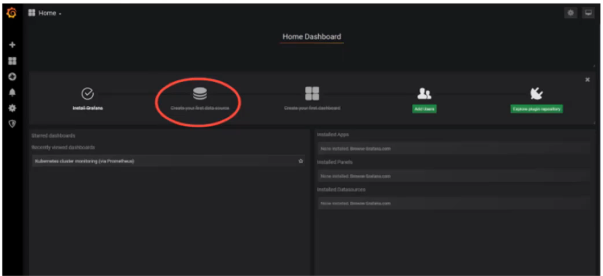
- 数据源配置
- 数据源就是prometheus service的地址
- 可以填写prometheus的service的内部DNS名称
- http://prometheus-k8s.monitoring.svc.cluster.local:9090
1 | kubectl -n monitoring get service |
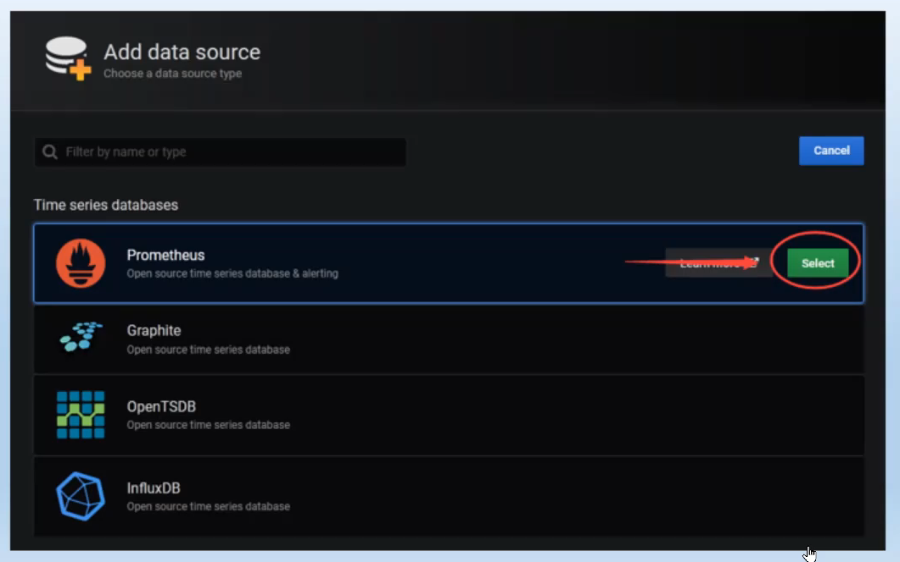
添加数据源
名字随意
URL填写Prometheus内部的DNS名称（prometheus.k8s:9090）
默认端口9090
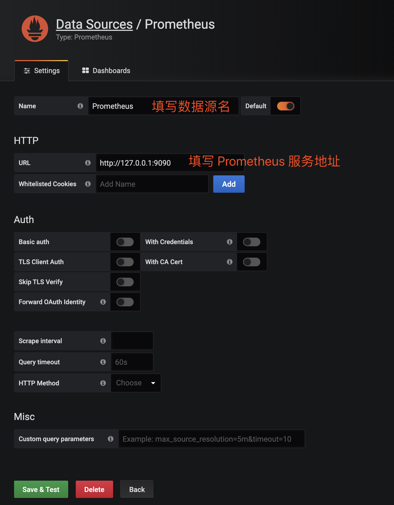
导入模板
正确配置后点击保存和测试后添加仪表盘
输入模板ID
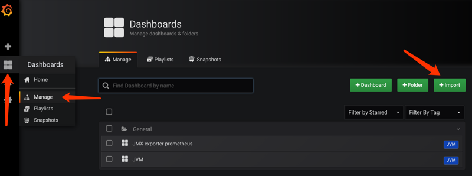
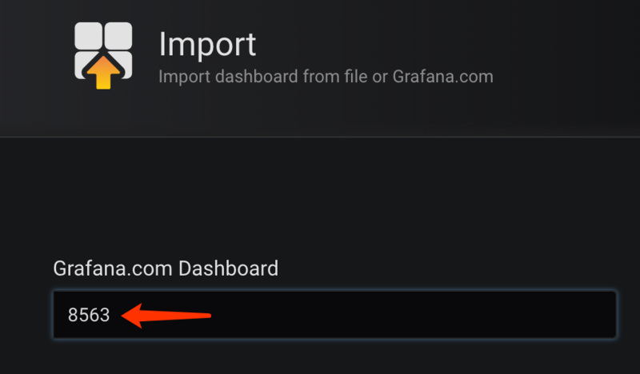
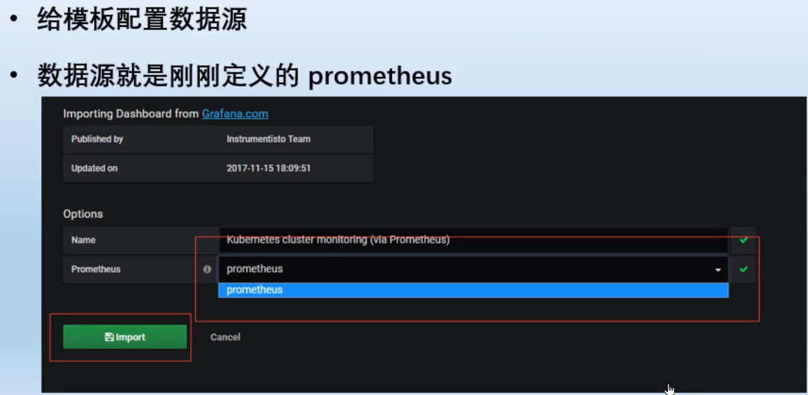
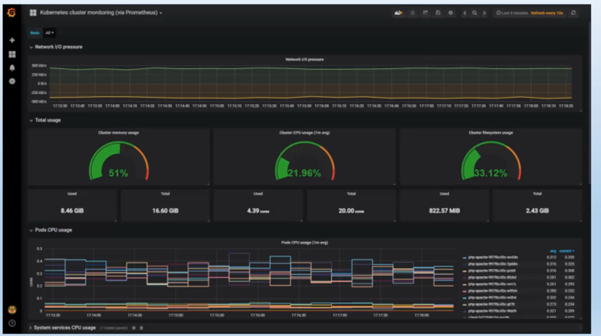
HPA控制器
Horizontal Pod Autoscaling，简称HPA，是kubernetes中实现POD水平自动伸缩的功能，HPA可以基于CPU利用率或其他应用程序提供的度量指标自动缩放POD的数量
pod水平自动伸缩性由kubernetes API资源和控制器实现。资源决定了控制器的行为。控制器会周期性的获取平均利用率，并与目标值相比较后来调整副本数量
限制：不适用于无法缩放的对象，比如DaemonSets
资源文件案例
- 首先创建一个单pod的apache集群
1 |
|
HPA资源对象定义
1 |
|
验证HPA集群
- 创建以后会有一个unknown不会立即生效，需要等待几分钟才能获取到CPU的信息，这是正常现象
1 | kubectl get hpa |
压力测试
持续访问Apache，增加CPU负载，在几分钟后会发现副本数量增加了
停止访问，让CPU空闲，副本不会立即释放，大约180~300秒后才开始释放副本，当副本达到最小保留数量以后停止释放pod
curl ‘http://192.168.1.21/info.php?id=200000'
- ab压力测试
1 | yum -y install httpd-tools |